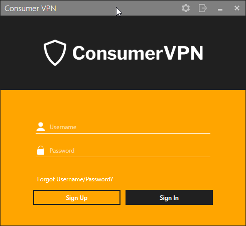
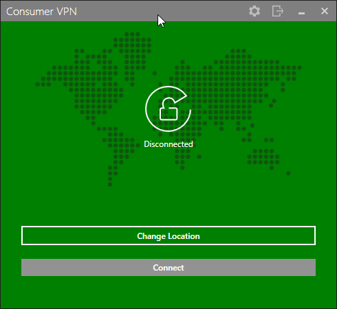

Branding - How To Make ConsumerVPN Yours
Provided to you is a copy of the example ConsumerVPN client, a base application that can be simply modified to be used as your customer-facing application. Designed to be simple to make unique, for most WLVPN partners, you will find yourself using it as your launching point as you use the features WLVPN provides.
What you need
You will need to become a registered WLVPN reseller to run the application. If you have not done so already, please visit https://wlvpn.com/#contact to get started.
To create your own application from this template, you will need a copy of Visual Studio. This can be obtained from here: https://www.visualstudio.com/vs/
Once Visual Studio 2017 has been installed, you will need to clone or download the repository for the ConsumerVPN application. You can either clone using git at https://github.com/wlvpn/ConsumerVPN-Windows or download the ZIP from our partner portal.
Once downloaded an extracted, open the VpnSDK.WLVpn.sln file in the extracted folder.
The application is a Microsoft .NET C# WPF application. It follows the normal MVVM patterns associated with a WPF application. This document does not detail the code in the application but how to change the look of the application generated from the code. If you install Visual Studio 2017, which is what we are using currently, you will get .NET 4.6.1 which is the .NET prerequisite for the application.
We use the WiX toolset for building installers. You will also need to download and install the WiX Toolset build tools and WiX Toolset Visual Studio Extensions that are compatible with your environment from this link: http://wixtoolset.org/releases/
The Wix installation will require you to enable .net 3.5 on your machine. If WiX does not automatically do this for you, perform the following instructions:
- Press “Windows Logo” + “R” keys on the keyboard.
- Type “appwiz.cpl” in the “Run” command box and press “ENTER” on the keyboard or click Run.
- In the “*Programs and Features” window, click on the link “*Turn Windows features on or off**”.
- Check if the “*.NET Framework 3.5 (includes .NET 2.0 and 3.0)*” option is available in it.
- If yes, then enable it and then click on “*OK*”.
- Follow the on-screen instructions to complete the installation and restart the computer, if prompted.
If you run in to any errors, the following link will provide information from Microsoft on how to solve any potential issues.
Navigating the project
Solution Structure
The application is divided in to the following solution structure.
| Folder / Namespace | Explanation / Usage |
|---|---|
| Behaviors | WPF behavior utilities |
| Common | Common View utilities |
| Converters | Data converters for UI elements |
| Events | Application-wide events |
| Extensions | Custom utility class extensions |
| Helpers | Utility classes for dealing with all kinds of data |
| Resources | All visual resources are stored here. You will most likely be working in here. There is a branding subfolder in this which contains all the files required to be modified to make the application visually yours. |
| ViewModels | View models (for standard MVVM development) for all views in the application. |
| Views | All the views the application uses. |
Things to change when branding
Application Settings
In the VpnSDK.WLVPN application properties (found by right clicking on the project in the solution explorer and then going to settings on the left-hand side bar) you will find the following settings.
- API_KEY
- AUTHORIZATION_TOKEN
- APPLICATION_NAME
These keys will need to be updated to match the data provided to you by WLVPN SDK to ensure you're able to authorize to the backend and use all functionality.
Application name and namespace
Under the Application section of the project properties, you will want to change the field WLConcepts to something along the lines of your application brand. For example, if you were called ConsumerVPN, it would be suggested to call it ConsumerVPN. As well as this, you should changed the Default Namespace to CompanyName.ApplicationName. Visual Studio will assist you in updating all the namespaces in the project files automatically.
Visual Settings
Each of the files in the Branding folder within Resources may be changed to have your visualization. Each file will be discussed in this section.
Branding.xaml
The Branding.xaml file is a WPF resource file that defines brushes, colors, images and strings used in various places within the application. Resources are defined in this file using the normal WPF Resource definition forms. If you wish to change a color or a brush, this is the file where you do it. The keys and values defined in the file are shown below and are generally self-explanatory. Refer to the key names to get a better understanding of what the value represents.
<!-- Names and URLs -->
<system:String x:Key="BRAND_NAME">Consumer VPN</system:String>
<system:String x:Key="BRAND_LOGFILE_NAME">ConsumerVPN.log</system:String>
<system:String x:Key="BRAND_MAIN_URL">https://wlvpn.com/#contact</system:String>
<system:String x:Key="BRAND_REGISTER_URL">https://wlvpn.com/#contact</system:String>
<system:String x:Key="BRAND_FORGOT_PASSWORD_URL">https://wlvpn.com/#contact</system:String>
<system:String x:Key="BRAND_SPARKLE_URL">https://example/sparkle.xml</system:String>
<!-- Logos, images and licenses -->
<BitmapImage x:Key="BRAND_LOGO" UriSource="pack://application:,,,/WLVpn;component/Resources/Branding/Assets/logo.png" />
<BitmapImage x:Key="BRAND_BANNER" UriSource="pack://application:,,,/WLVpn;component/Resources/Branding/Assets/imageBanner.png" />
<BitmapImage x:Key="BRAND_MAP" UriSource="pack://application:,,,/WLVpn;component/Resources/Branding/Assets/dotmap.png" />
<ImageSource x:Key="BRANDING_UNKNOWN_COUNTRY_LOGO">pack://application:,,,/WLVpn;component/Resources/Branding/Assets/logo.png</ImageSource>
<system:String x:Key="BRAND_LICENSE">pack://application:,,,/WLVpn;component/Resources/Branding/Assets/licenses.rtf</system:String>
<system:String x:Key="BRAND_ICON">pack://application:,,,/WLVpn;component/Resources/Branding/Assets/brandIcon.ico</system:String>
<!-- Branding colors and brushes -->
<!-- Multiview colors and brushes -->
<SolidColorBrush x:Key="BRAND_TITLE_TEXT_FOREGROUND" Color="White" />
<SolidColorBrush x:Key="BRAND_NORMAL_TEXT_FOREGROUND" Color="White" />
<SolidColorBrush x:Key="BRAND_CONTRAST_FOREGROUND" Color="White" />
<SolidColorBrush x:Key="BRAND_ACTION_PANEL_BRUSH" Color="#545454" />
<!-- Login view brushes -->
<SolidColorBrush x:Key="BRAND_LOGIN_LOGO_BACKGROUND" Color="#202020" />
<SolidColorBrush x:Key="BRAND_LOGIN_PANEL_BACKGROUND" Color="#545454" />
<SolidColorBrush x:Key="BRAND_LOGIN_ICON_ACCENT" Color="White" />
<SolidColorBrush x:Key="BRAND_LOGIN_ERROR_ACCENT" Color="#E10000" />
<SolidColorBrush x:Key="BRAND_LOGIN_ACCENT" Color="White" />
<!-- Location view brushes -->
<SolidColorBrush x:Key="BRAND_LOCATION_LIST_BACKGROUND" Color="#545454" />
<SolidColorBrush x:Key="BRAND_LOCATION_SERVERS_LIST_BACKGROUND" Color="#2a2a2a" />
<SolidColorBrush x:Key="BRAND_LOCATION_LIST_HEADER_BORDER" Color="Black" />
<SolidColorBrush x:Key="BRAND_SEARCH_BACKGROUND" Color="#717171" />
<SolidColorBrush x:Key="BRAND_SEARCH_FOREGROUND" Color="White" />
<!-- Main view brushes -->
<SolidColorBrush x:Key="BRAND_CONNECTIVITY_PANEL_BACKGROUND" Color="#545454" />
<SolidColorBrush x:Key="BRAND_CONNECT_BUTTON_FOREGROUND" Color="White" />
<SolidColorBrush x:Key="BRAND_CONNECT_BUTTON_BACKGROUND_NORMAL" Color="#5FB006" />
<SolidColorBrush x:Key="BRAND_CONNECT_BUTTON_BACKGROUND_DISABLED" Color="#929292" />
<SolidColorBrush x:Key="BRAND_CONNECT_BUTTON_BACKGROUND_MOUSEOVER" Color="#417C0A" />
<!-- Settings view brushes -->
<SolidColorBrush x:Key="BRAND_SETTINGS_TAB_FOREGROUND" Color="White" />
<SolidColorBrush x:Key="BRAND_SETTINGS_TAB_BOTTOM_BORDER_HIGHLIGHT" Color="#D8D8D9" />
<SolidColorBrush x:Key="BRAND_SETTINGS_TAB_BOTTOM_BORDER" Color="#0c0c0c" />
<SolidColorBrush x:Key="BRAND_SETTINGS_PANEL_BACKGROUND" Color="#202020" />
<SolidColorBrush x:Key="BRAND_SETTINGS_CONTROLS_COLOR" Color="White" />
<!-- Miscs -->
<Color x:Key="BRAND_ISBUSY_BACKGROUND">Black</Color>
<SolidColorBrush x:Key="BRAND_GRID_TEXT_FOREGROUND" Color="White" />
<SolidColorBrush x:Key="BRAND_COMBOBOX_BACKGROUND" Color="#2a2a2a" />
<SolidColorBrush x:Key="BRAND_DIALOG_BACKGROUND" Color="#545454" />
<Color x:Key="BRAND_TAB_DISABLED_BORDER_COLOR">#AAAAAA</Color>
<system:Boolean x:Key="BRAND_USES_EMAIL">False</system:Boolean>
<!-- Context Menu colors -->
<Color x:Key="BRAND_MENU_TEXT_HIGHLIGHT">Black</Color>
<Color x:Key="BRAND_CONTEXT_MENU_BACKGROUND_COLOR">Black</Color>
<SolidColorBrush x:Key="BRAND_CONTEXT_MENU_FOREGROUND_BRUSH" Color="White" />
<SolidColorBrush x:Key="ContextMenuBackgroundBrush" Color="{StaticResource BRAND_CONTEXT_MENU_BACKGROUND_COLOR}" />
<SolidColorBrush x:Key="SubMenuBackgroundBrush" Color="{StaticResource BRAND_CONTEXT_MENU_BACKGROUND_COLOR}" />
<SolidColorBrush x:Key="MenuItemBackgroundBrush" Color="{StaticResource BRAND_CONTEXT_MENU_BACKGROUND_COLOR}" />
There are quite a lot of colors to change but don't get too scared. Nearly every color can be modified to your hearts content to ensure your application color scheme fits with the palette you wish to use for your brand.
Strings.resx
Shown below are the strings we currently use in the application. If you wish a different string to be used, change the text value in the Strings.resx file. Note, the Strings.resx file defines all the strings that are user facing.
| KEY | VALUE |
|---|---|
| AUTHENTICATING | Authenticating |
| BEST_AVAILABLE | Best |
| CANCEL | Cancel |
| CHANGE_LOCATION_BUTTON | Change |
| CIPHER_LEVEL | Cipher |
| CITY | City |
| CLOSE | CLOSE |
| CLOSE_DIALOG_QUIT_BUTTON | Quit |
| CONNECTED_ENCRYPTION | Cipher: |
| CONNECTED_PUBLIC_IP_HEADER | Public |
| CONNECTED_VISIBLE_LOCATION_HEADER | Visible |
| CONNECTED_VISIBLE_LOCATION_HEADER_CHANGED | Visible |
| CONNECTING | Connecting |
| COUNTRY | Country |
| CURRENT_VISIBLE_LOCATION | You |
| DIALOG_ACTION_CANCEL | Dont |
| DIALOG_ACTION_DESCRIPTION | This |
| DIALOG_ACTION_OK | OK |
| DIALOG_ACTION_OK_LOGOUT | Continue |
| DIALOG_ACTION_TITLE | You |
| DISCONNECTING | Disconnecting |
| ERROR_OCCURED | An |
| IP_UPDATING_TEXT | Updating... |
| LOAD | Load |
| LOGGING_OUT | Logging |
| LOGIN_EMAILBOX_HINT | |
| LOGIN_FORGOT_EMAIL_PASSWORD | Forgot |
| LOGIN_FORGOT_USERNAME_PASSWORD | Forgot |
| LOGIN_PASSWORDBOX_HINT | Password |
| LOGIN_SIGNIN_BUTTON | Sign |
| LOGIN_SIGNUP_BUTTON | Sign |
| LOGIN_USERNAMEBOX_HINT | Username |
| NOTIFICATION_CONNECTED_TEXT | You |
| NOTIFICATION_DISCONNECTED_TEXT | You |
| OK | OK |
| PING | Ping |
| RECONNECTING | Reconnecting |
| REINSTALL_TAP_DRIVER | Reinstall |
| SAVE | Save |
| SETTINGS_APPLICATION_STARTUP | Application |
| SETTINGS_APPLICATION_STARTUP_OPTION1 | Do |
| SETTINGS_APPLICATION_STARTUP_OPTION2 | Connect |
| SETTINGS_AUTO_RECONNECT | Auto |
| SETTINGS_CLOSING | Closing |
| SETTINGS_CLOSING_OPTION2 | Close |
| SETTINGS_CLOSING_OPTION3 | Show |
| SETTINGS_DIAGNOSTICS | Diagnostics |
| SETTINGS_GENERAL_KILLSWITCH_DESCRIPTION | Kill |
| SETTINGS_GENERAL_NOTIFICATIONS | Show |
| SETTINGS_KILL_SWITCH | Kill |
| SETTINGS_OTHER | Other |
| SETTINGS_PROTOCOL_IKEV2 | IKEv2 |
| SETTINGS_PROTOCOL_IKEV2_DESC | Offers highly stable security, especially when switching networks or reconnecting. |
| SETTINGS_PROTOCOL_OPENVPN | OpenVPN |
| SETTINGS_PROTOCOL_OPENVPN_DESC | Provides the best security. It may be slower than other protocols due to its stronger security. OpenVPN is also good choice when other protocols are not available due to firewall restrictions. |
| SETTINGS_PROTOCOL_OPENVPN_SCRAMBLE | Scramble |
| SETTINGS_PROTOCOL_OPENVPN_SCRAMBLE_INFO | Scramble adds obfuscation capability to OpenVPN, allowing it to bypass network traffic sensors which aim to detect usage of a VPN and block it. |
| SETTINGS_SYSTEM_STARTUP | System |
| SETTINGS_SYSTEM_STARTUP_OPTION1 | Start |
| SETTINGS_SYSTEM_STARTUP_OPTION2 | Hide |
| SETTINGS_TAB_ABOUT | About |
| SETTINGS_TAB_CONNECTION | Connection |
| SETTINGS_TAB_GENERAL | General |
| SETTINGS_TAB_LICENSES | Licenses |
| SETTINGS_TAB_LOGS | Logs |
| SETTINGS_UPDATES | Updates |
| TASKBAR_CONNECTED | Status: |
| TASKBAR_CURRENT_IP | Current |
| TASKBAR_DISCONNECTED | Status: |
| TASKBAR_HIDE_WINDOW | Hide |
| TASKBAR_SHOW_WINDOW | Show |
| UPDATE_DIALOG_DESCRIPTION | {0} |
| UPDATE_DIALOG_HEADER | A |
| UPDATE_DIALOG_INSTALL | Install |
| UPDATE_DIALOG_RELEASE_NOTES | Release |
| UPDATE_DIALOG_REMIND | Remind |
| UPDATE_DIALOG_SKIP | Skip |
| UPDATE_DIALOG_TITLE | Update |
| VERSION | Version |
| VPN_BUTTON_CONNECT | Connect |
| VPN_BUTTON_DISCONNECT | Disconnect |
| WINDOW_BUTTON_SETTINGS | Preferences |
| WINDOW_BUTTON_SIGNOUT | Sign |
If you don't like some of the terminology used within the application, can easily modify this file to set the tone of voice you'd like your customer faceting application.
Image Assets
Within the Branding/ folder, you will find multiple images to replace to make the client look how you wish it to. Keep in mind, it is suggested to keep them the same size unless you intend on modifying the view XAML files to fit everything correctly.
| Image Description | Image | Filename |
|---|---|---|
| An image of the countries on earth done in the style of a dot painting. This shows under the the text in the main application UI post-authenticate. (440x262) |  |
dotmap.png |
| An image of the icon used for the system tray icon as well as the logo in the about screen. Ensure this is a multi-dimension (16x16 up to 512x512) .ico file. |  |
brandIcon.ico |
| An image that acts as a banner for the top of the application. (634 x 192) |  |
imageBanner.png |
Library licenses
The licenses.rtf file is a compilation of the licenses used for the 3rd party products used in this application. If you leave it as is, it should be fine. If you change the application logic and add any 3rd party libraries, you will need to update this file with the appropriate licenses.
Building the Application and making it yours
Getting the Code
The code is kept in a git repository at https://github.com/wlvpn/ConsumerVPN-Windows. Clone the repository using your git client of choice on to your local machine. The solution file in the repository is named VpnSDK.WLVpn.sln. Using an instance of Visual Studio 2017 running as an administrator, open the VpnSDK.WLVpn.sln folder to begin.
Configuring Visual Studio to use the WLVPN NuGet feed.
Your account manager will provide you the details required to add the private WLVPN NuGet feed to your instance of Visual Studio. Using the provided details, follow the instructions provided by Microsoft here on how to add an external NuGet repository, this will allow you to use the VpnSDK package as well as others that may be required depending on your requirements. (Note: Do not follow any instructions past the linked paragraph as they are for VSTS configurations.)
Changing the Branding
You can change all the colors and links used by the application by changing values in the branding.xaml file. Start by changing one of the colors to something glaring and then looking at the application to better understand the relationship between the definitions and where they are used in the application. For instance, changing one of the default gray colors to Orange gives us the following.
Gray to Orange
<Color x:Key="Gray4" options:Freeze="true">Orange</Color>

Another example would be changing the BRAND_CONNECTIVITY_PANEL_BACKGROUND key to Green.
Connectivity Panel to Green
<SolidColorBrush x:Key="BRAND_CONNECTIVITY_PANEL_BACKGROUND"
options:Freeze="true"
Color="Green" />

All of these resources can be found in {PROJECT_ROOT}\src\VpnSDK.WLVpn\Resources\Branding\.
Just as you can easily change the colors or the images by modifying the files in the Branding folder, you can modify all the text strings in the Strings.resx file. For example, if you wanted to change "Change Location" to "Select a Server", look for "Change Location" within the Strings.resx file and update it. As the ConsumerVPN example project uses standard string resources, you can also build multi-locale strings like any other .NET/WPF application.
Building
The ConsumerVPN project uses the WiX installer to handle compilation of the setup application. Please ensure you have the WiX toolset installed before going ahead. There are more detailed instructions in the Build_Installer.md and README.md files located in the root of the project.
Assuming you have correctly configured the WLVPN NuGet feed as earlier instructed, you should now be able to just build the VpnSDK.WLVpn project in Visual Studio and have a live/working build.
Now all that's left is for you to brand it, modify the UI how you wish and have fun building a product your customers will love.